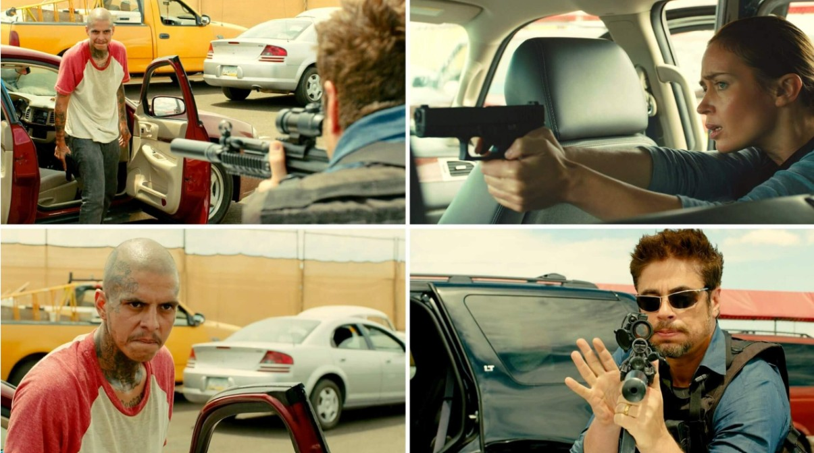

The news that sent shockwaves through action and crime cinema circles is officially confirmed: Emily Blunt, Benicio del Toro, and Josh Brolin are reuniting for Sicario 3. Directed by Padraic McKinley and penned by Peaky Blinders mastermind Steven Knight, the third installment sets out to pull the franchise back into the spotlight.
While fan excitement is at an all-time high, the announcement arrives with a crucial question hanging over the project: can a third film recapture the haunting, claustrophobic brilliance of the 2015 original, or will it lean into the slick action tropes that diluted its 2018 sequel?
To understand why Sicario 3 represents a pivotal crossroads for modern crime thrillers, we have to look back at what made Denis Villeneuve's vision a masterclass, and why reuniting the core trio is only half the battle.
The Retrospective: Why Sicario 3 Needs Denis Villeneuve's Original Grit
When Sicario debuted in 2015, it wasn't marketed as the foundation for an action franchise. It was a bleak, existential thriller about moral bankruptcy on the US-Mexico border. Denis Villeneuve, backed by Roger Deakins' oppressive cinematography and Jóhann Jóhannsson's terrifying, industrial score, crafted a world where rules didn't exist and hope was an early casualty.
1. Emily Blunt Was the Audience's Moral Compass
The biggest flaw of 2018's Sicario: Day of the Soldado wasn't its action sequences. It was the absence of FBI Agent Kate Macer (Emily Blunt). Kate was never meant to be a traditional action hero. She was an idealist pushed into an abyss, serving as the audience's surrogate.
Without her rigid insistence on the rule of law, Matt Graver (Josh Brolin) and Alejandro Gillick (Benicio del Toro) were simply two dangerous operatives engaging in unhinged tactical ops. Blunt's return restores the essential friction that drove the original: the conflict between human morality and state-sanctioned violence.

2. Dread Over Firepower
Villeneuve understood that real fear isn't generated by endless gunfights, but by the excruciating wait before a single shot is fired. The legendary Juarez border gridlock scene remains a benchmark in modern filmmaking because of its patience. The camera lingers on sweating hands, side-view mirrors, and distant, unidentified threats.
Sicario 3 screenwriter Steven Knight and director Padraic McKinley must resist the urge to turn the film into a standard blockbuster shoot-'em-up. The franchise thrives when the atmosphere feels suffocating.
3. No Clean Victories or Heroic Arcs
In the original Sicario, nobody wins. Kate is coerced at gunpoint to sign away her integrity, Alejandro disappears into the night after executing a cartel kingpin's family, and Matt calmly returns to his shadow war.
Day of the Soldado strayed toward a softer narrative, attempting to humanize Alejandro through a protector-child dynamic. For Sicario 3 to succeed, it must embrace Taylor Sheridan's original ethos: the drug war is an unwinnable, cyclical nightmare that corrupts everyone who touches it.
Deep Dive: The Uncompromising Legacy of the Sicario Trilogy in Modern Crime Cinema
Even as Hollywood shifted heavily toward capes, CGI spectacles, and sanitized blockbusters throughout the late 2010s, the Sicario series carved out a distinct legacy. It stands alongside films like Heat, No Country for Old Men, and The Town as one of the few contemporary adult-oriented crime sagas.
| Film Element | Sicario (2015) | Sicario: Day of the Soldado (2018) | What Sicario 3 Must Achieve |
|---|---|---|---|
| Perspective | Moral outrage through an outsider's eyes (Kate Macer) | Tactical operations through military enforcers | A clash between systemic corruption and personal accountability |
| Visual Tone | Sun-bleached deserts, night-vision green, deep silhouettes | High-contrast action sequences, military tactical aesthetics | Atmospheric dread combined with tight character-driven framing |
| Core Theme | The illusion of law and order in covert intelligence warfare | Rogue escalation and lawlessness in border enforcement | The inevitable reckoning when past actions catch up to all parties |
A Moral Spectrum with No True Heroes
What separates Sicario from standard cartel thrillers is its nuanced gray scale. It refuses to depict federal agencies as righteous guardians or cartels as cartoonish villains. Instead, it frames the entire ecosystem as a bloody machine where bureaucracy and law enforcement act with the same ruthless pragmatism as the syndicates they claim to combat.
Setting the Gold Standard for Sound and Cinematography
Jóhann Jóhannsson's score, particularly the track "The Beast," did not merely accompany the visual images; it haunted them. Combined with Roger Deakins' aerial shots of the border fence cutting through the desert like an open wound, Sicario proved that crime thrillers can achieve high-art aesthetic heights.
What Lies Ahead for Sicario 3?
With production slated to launch under Black Label Media and Thunder Road, all eyes are on how Steven Knight scripts the reunion. Bringing Kate Macer back into the orbit of Alejandro and Matt Graver creates instant narrative gunpowder. Will Kate attempt to bring them to justice? Or will the escalation of border violence force her back into a devil's bargain?
If Sicario 3 dares to look into the dark without flinching, placing tension over spectacle and morality over gunplay, it won't just complete a trilogy. It will solidify its place as one of the definitive crime sagas of the 21st century.